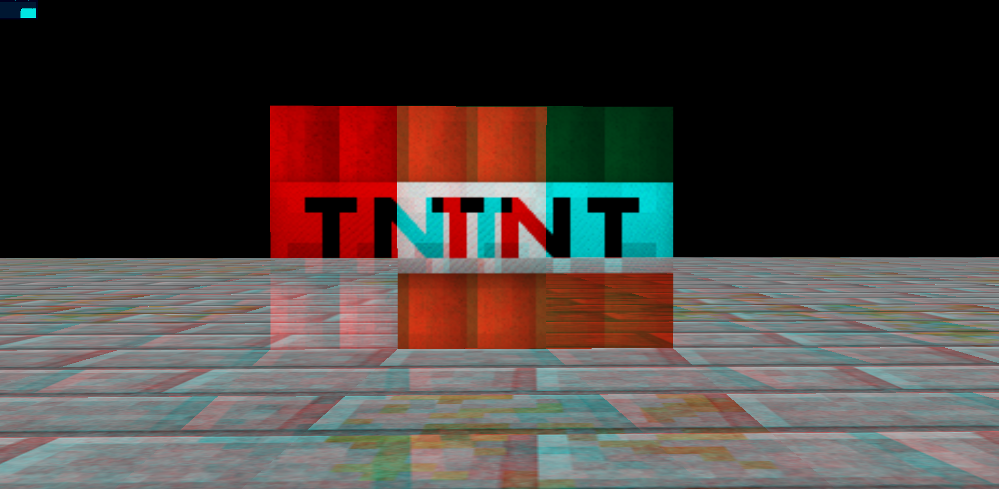
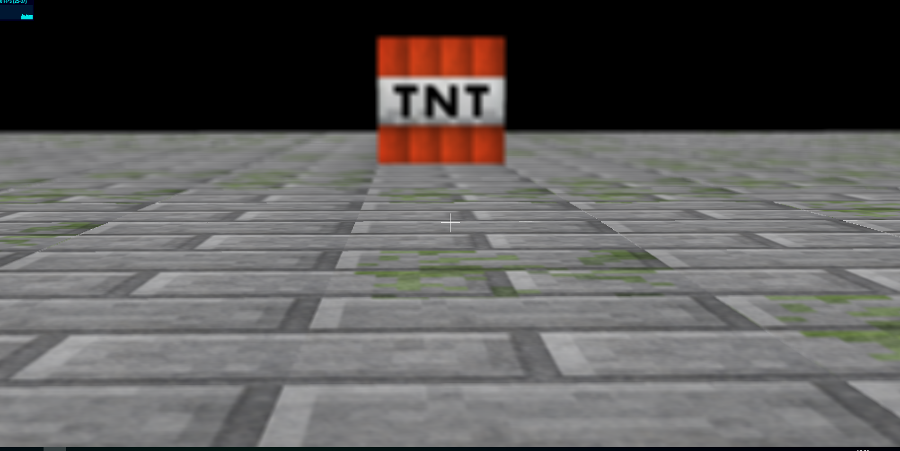
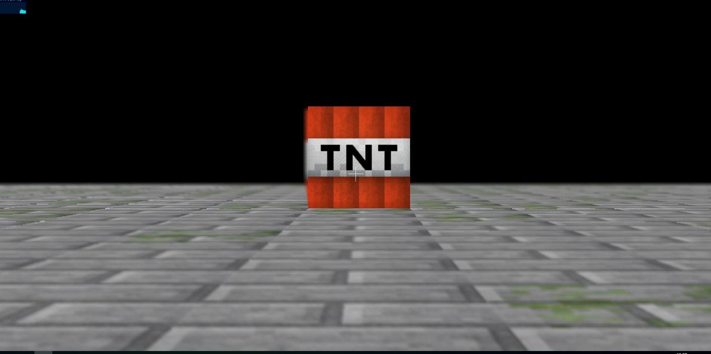

Dans un premier temps nous avons eu à remplir la fonction this.update = function ( camera ) dans la classe AnaglyphRenderer,
cela afin de créer et remplir les matrices de projections de l'oeil gauche et de l'oeil droit à l'aide des formules fournis dans les slides.
Ces deux matrices seront chacune assigné à une camera différente, une par oeil.
1.2 Anaglyphe
Après avoir géré tous ce qui est création des deux caméras, oeil gauche / oeil droit, nous n'avons plus qu'a appliquer un affiché coloré différent sur chaque oeils.
Cela afin de reproduire un affichage 3D à l'aide de lunette cyen/rouge, chaque oeils verra la couleur qui lui correspond et cela créera cette effet de 3D.
this.render = function ( scene, camera ) {
var gl = renderer.domElement.getContext( 'webgl' );
gl.colorMask(true,false,false,false);
this.update(camera);
renderer.render(scene, this.cameraLeft);
renderer.clearDepth();
gl.colorMask(false,true,true,false);
renderer.render(scene, this.cameraRight);
}

Résultat obtenus à la fin de cette partie
2. Profondeur de champs
Dans cette partie, nous devons implémenter une profondeur sur le champ de vision de la caméra, c'est à dire ce qui sera sur les bords / vue de loin sera flou.
2.1. Cercle de confusion
Dans cette partie il était demander de comprendre le principe du cercle de confusion expliqué dans les slides.
2.2. Rendu avec profondeur de champ
Afin de mettre en place cette effet de flou, nous avons à remplir les fonctions présente dans shaderDof.frag à l'aide des formules mathématiques présente dans les slides
ainsi que l'algorithme qui y est expliqué.
Cela étant fait nous avions un flou fixe, il ne nous resté plus qu'à faire en sorte que le cercle de confusion soit centré sur notre curseur (soit notre direct de vue).


Resultats de flou avec vue sur le sol, puis sur la tnt
Nous avons rencontré un problème dans cette partie lorsque nous avons fini de la coder. Le problème était que dès que nous nous déplacions la camera se déplacé d'un coup très vite et nous perdions
notre scene de vue. La solution afin de palier à cela nous a été proposé par un camarade et elle était de modifier dans render.js les calculs de déplacement et de les divisés par 10.
Mais nous ne sommes pas réellement sûr que le problème venait de la, malgré qu'effectivement cela a résolue notre problème de déplacement.